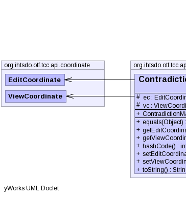
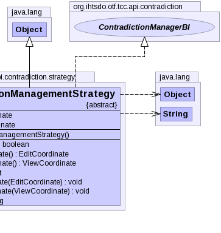

public abstract class ContradictionManagementStrategy extends Object implements ContradictionManagerBI
|  |  |
| Modifier and Type | Field and Description |
|---|---|
protected EditCoordinate |
ec |
protected ViewCoordinate |
vc |
| Constructor and Description |
|---|
ContradictionManagementStrategy() |
| Modifier and Type | Method and Description |
|---|---|
boolean |
equals(Object obj) |
EditCoordinate |
getEditCoordinate() |
ViewCoordinate |
getViewCoordinate() |
int |
hashCode() |
void |
setEditCoordinate(EditCoordinate ec) |
void |
setViewCoordinate(ViewCoordinate vc) |
String |
toString() |
clone, finalize, getClass, notify, notifyAll, wait, wait, waitgetDescription, getDisplayName, getPolicy, resolveVersions, resolveVersionsprotected transient ViewCoordinate vc
protected transient EditCoordinate ec
public void setViewCoordinate(ViewCoordinate vc)
public ViewCoordinate getViewCoordinate()
public void setEditCoordinate(EditCoordinate ec)
public EditCoordinate getEditCoordinate()
Copyright © 2013 International Health Terminology Standards Development Organisation. All rights reserved.